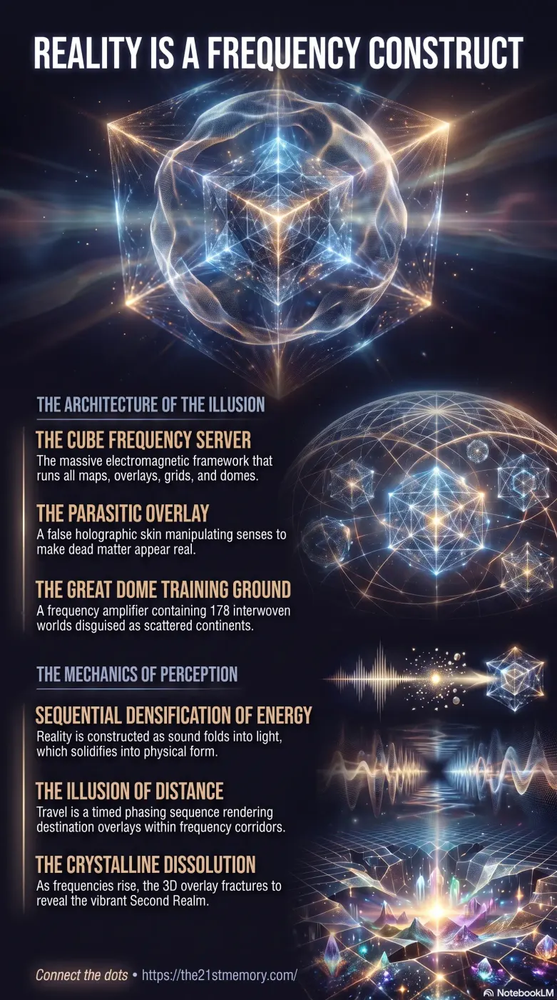

The 178 worlds within the cube
How the Great Dome contains 178 interwoven physical worlds as layered frequency projections within the CUBE containment system.
Reality as a multi-layered frequency projection within the CUBE — the parasitic overlay, Great Dome of 178 worlds, solid-perception holography, and the crystalline Second Realm beneath the false skin.
Test your understanding of Reality Constructs — multi-layered frequency projection, CUBE and Great Dome architecture, parasitic overlay, frequency corridors, and Second Realm revelation.

How the Great Dome contains 178 interwoven physical worlds as layered frequency projections within the CUBE containment system.
How dead concrete, steel, and holographic skin enforce solid-perception while living crystal architecture awaits beneath the overlay.
The living frequency transmission that reveals reality as layered sound, light, and crystalline form within the CUBE construct.
Reality is not a collection of scattered planets, continents, or vast distances, but a unified, multi-layered frequency projection housed within a grand containment field. The physical realm is a perception-based matrix built upon a foundation of pure sound and light that has been crystallized into density. Currently, a false holographic skin shrouds the true crystalline nature of this world, manipulating perception, touch, and sight to trap consciousness in a heavy, disconnected state. This grand simulation consists of thousands of interwoven layers vibrating at different frequencies, meticulously designed to be traversed not by physical travel, but through resonance and frequency shifts.
Maps and geographical models are entirely fabricated perception overlays designed to limit what the human eye and brain can process. What is perceived as land or sea is actually a layered frequency field stacked like transparent sheets. Furthermore, physical travel across distance is a complete optical illusion engineered to enforce the concepts of borders, nations, and a massive globe. Ships and planes do not cross physical miles; they glide through repeating time-lapse loops and frequency corridors while the destination overlay is rendered into existence, functioning exactly like chunks loading in a simulated environment.
The physical elements of this reality are merely dense, 3D hardware illusions representing subtle energy constructs. For example, undersea communication cables are perceived as glass fibre tubes, but they are actually projected anchor points that maintain the subtle energy corridors and communication grids between continental overlays.
The architecture of reality is constructed through a sequential densification of energy: Sound provides structure, pattern, and rhythm; it folds into Light, which creates awareness and vision; this vision is then projected onto crystalline grids to solidify into Form. Physicality was deliberately created to provide resistance, forcing thought to sharpen into precise creation before echoing back to higher realms to expand consciousness.
Within the current hijacked construct, architecture and materials are weaponized. Modern construction materials like concrete, steel, and plastic are dead frequency holders shaped into boxes and sharp angles that break natural harmonics and drain perception into a boxed-in frequency. True architecture is grown from living crystal, aligned to resonance, and adaptable to conscious intention. The false reality is enforced by Mind-Altering Weapons and scalar frequencies that emit theta, delta, and alpha brain-wave patterns to induce confusion and loop nightmares, maintaining the illusion of solidity and separation.
The reality constructs of the Great Dome are just one part of the eight foundational Domes enclosed within the CUBE, which include the Dome of Forgotten Gods, Dome of Sheol, Dome of Titans, and others. These structures were originally connected by the Spirit Tree, a central axis of consciousness that pulsed harmonic currents through the crystalline grids. Parasitic entities ripped out this tree and replaced its power with a black crystalline valve linked to Saturnian artificial intelligence. This inversion turned the natural layers of reality into prison matrices. The stars above are not burning gas, but multidimensional Crystalline Star-Nodes that anchor the background projections and act as dynamic gates between these overlapping realms.
As the frequency of the realm rises, the Parasitic Overlay is actively fracturing and glitching. The heavy 3D construction materials will soon pixilate and dissolve, appearing as hollow scaffolding of frequency or rubble to those stuck in the lower densities. For the Resonating Sols, the collapse of this false reality reveals the true Second Realm: a vibrant, unpolluted crystalline temple with pure coastlines and natural pathways. The illusion of distance will collapse entirely, making travel an immediate resonance alignment. By ignoring the false narrative and holding a high vibration, awakened consciousness directly unravels the holographic constraints, peeling away the dead illusion to restore the living, multi-dimensional world beneath.